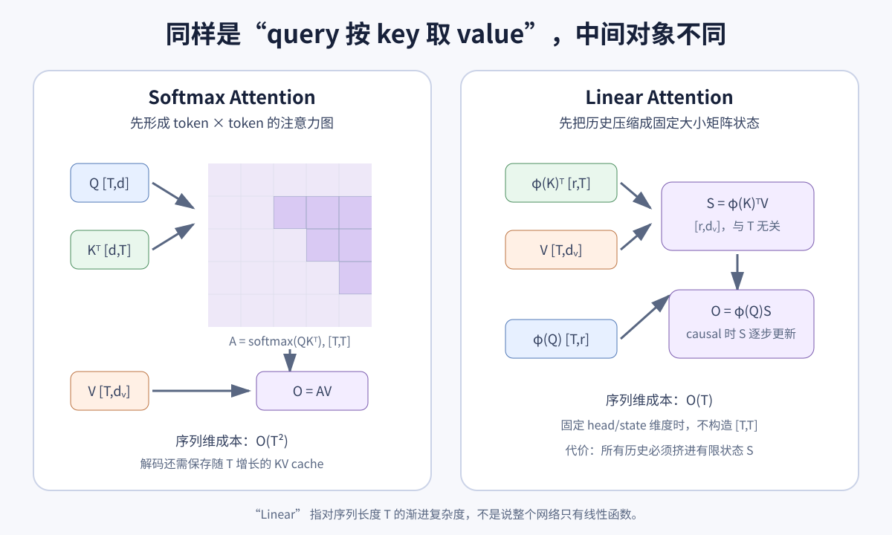
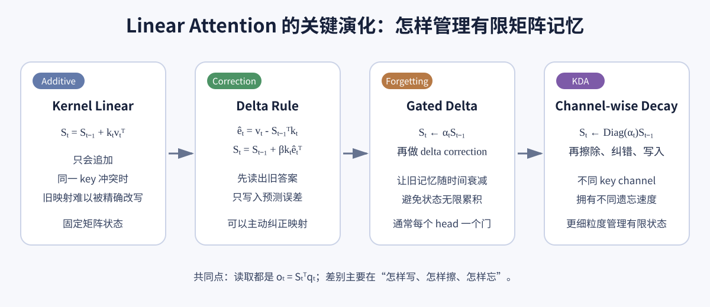

Linear Attention 入门：从核技巧到 Delta Rule 与 KDA
1. 概览
先回答最直接的问题：是的，KDA（Kimi Delta Attention）属于 Linear Attention。
这里的 “linear” 指的是：当 head dimension 固定时，计算量与内存不再随着序列长度 $T$ 二次增长，而是近似随 $T$ 线性增长。它不是说模型只包含线性函数，也不是说 attention weight 是 query/key 的线性函数。
标准 Softmax Attention 显式比较所有 token pair：
\[O=\operatorname{Softmax}\left(\frac{QK^\top}{\sqrt d}\right)V.\]长度为 $T$ 时，中间注意力矩阵是 $T\times T$。Linear Attention 的核心改写是：不再保存完整 token-token 矩阵，而是把历史 key-value 压缩进一个固定大小的矩阵状态 $S_t$，当前 query 再从 $S_t$ 中读取：
\[S_t=\operatorname{Update}(S_{t-1},k_t,v_t), \qquad o_t=S_t^\top q_t.\]Linear Attention 因而可以同时用两种视角理解：
- Attention 视角：利用 kernel feature map 和矩阵乘法结合律，改变 $Q,K,V$ 的计算顺序；
- RNN / Fast Weight 视角：每个 token 都在读写一个固定大小的矩阵记忆。
KDA 属于第二种现代形态。它不是最早期“只把 $KV$ 加起来”的 Linear Attention，而是带有遗忘、擦除、纠错、写入的矩阵状态 RNN。它与 Kimi K3 的关系可继续参见：Kimi K3 架构精读。

自制图。左侧先构造 $T\times T$ 的注意力矩阵，再乘 $V$；右侧先把所有历史压缩成与 $T$ 无关的 $S=\phi(K)^\top V$，然后由 $\phi(Q)$ 读取。省掉注意力矩阵带来线性复杂度，也引入有限状态容量瓶颈。
2. 从标准 Softmax Attention 开始
2.1 单个 query 在做什么？
设当前 query 是 $q_i\in\mathbb R^d$，历史共有 $T$ 个 key/value：
- $k_j\in\mathbb R^d$：第 $j$ 个 key；
- $v_j\in\mathbb R^{d_v}$：第 $j$ 个 value；
- $q_i^\top k_j$：query 与 key 的匹配分数。
Softmax Attention 输出为：
\[o_i=\sum_{j=1}^{T} \frac{\exp(q_i^\top k_j/\sqrt d)} {\sum_{r=1}^{T}\exp(q_i^\top k_r/\sqrt d)}v_j.\]它分三步：
- 当前 query 与每个 key 做点积；
- 对 $T$ 个分数做 softmax，得到和为 1 的权重；
- 用权重加权所有 value。
causal language model 在位置 $i$ 只能读取 $j\leq i$，因此注意力图是一个带下三角 mask 的 $T\times T$ 矩阵。
2.2 二次复杂度从哪里来？
假设 $Q,K\in\mathbb R^{T\times d}$。计算 $QK^\top$ 会得到：
\[[T,d]\times[d,T]\rightarrow[T,T].\]若 $d$ 固定，时间和中间矩阵内存都含 $T^2$ 项。几个直观数字：
| 序列长度 $T$ | 单 head 注意力元素数 $T^2$ | 仅按 BF16 粗算 |
|---|---|---|
| 4K | 16,777,216 | 约 32 MiB |
| 32K | 1,073,741,824 | 约 2 GiB |
| 1M | $1.10\times10^{12}$ | 约 2 TiB |
FlashAttention 不会把完整矩阵长期写回显存，因此实际内存远好于这张朴素表；但它没有改变所有 query-key pair 都要参与计算这一渐进事实。
在 autoregressive decoding 中，每一步只有一个新 query，不需要重新算完整 $T^2$，但仍需保存长度随 $T$ 增长的 KV cache，并让新 query 与所有历史 key 比较。于是单步读取成本随历史长度增长。
3. 第一代 Linear Attention：kernel trick 与结合律
3.1 把相似度写成 feature map 点积
Softmax 作用在完整的一行分数上，不能直接随意交换矩阵乘法顺序。Linear Attention 选择一种可分解的非负相似度：
\[\operatorname{sim}(q,k)=\phi(q)^\top\phi(k),\]其中 $\phi:\mathbb R^d\rightarrow\mathbb R^r$ 是 feature map。经典 Linear Transformer 常用：
\[\phi(x)=\operatorname{ELU}(x)+1,\]使每个 feature 为正数。Performer 则用随机特征去近似 softmax kernel。feature map 的选择会影响表达能力、数值稳定性和是否接近原始 softmax；Linear Attention 并不只有一种 $\phi$。
归一化后的 kernel attention 是：
\[o_i= \frac{\sum_{j=1}^{T}\phi(q_i)^\top\phi(k_j)v_j} {\sum_{j=1}^{T}\phi(q_i)^\top\phi(k_j)}.\]3.2 用结合律改变计算顺序
先看分子：
\[\sum_j\left(\phi(q_i)^\top\phi(k_j)\right)v_j.\]因为 $\phi(q_i)$ 与求和下标 $j$ 无关，可以提到外面：
\[\phi(q_i)^\top \left(\sum_j\phi(k_j)v_j^\top\right).\]定义两个汇总状态：
\[S=\sum_j\phi(k_j)v_j^\top\in\mathbb R^{r\times d_v}, \qquad z=\sum_j\phi(k_j)\in\mathbb R^r.\]输出变为：
\[o_i=\frac{\phi(q_i)^\top S}{\phi(q_i)^\top z}.\]原来的顺序是：
(Q Kᵀ) V → 先生成 [T,T]
现在的顺序是：
Q (Kᵀ V) → 先生成 [r,d_v]
只要 $r,d_v$ 不随 $T$ 增长，就不必物化 $T\times T$ 注意力矩阵。
4. Causal Linear Attention 为什么等价于矩阵状态 RNN？
语言模型在位置 $t$ 只能使用前缀 $1\ldots t$，因此状态可以逐 token 更新：
\[S_t=S_{t-1}+\phi(k_t)v_t^\top, \qquad z_t=z_{t-1}+\phi(k_t).\]再由当前 query 读取：
\[o_t=\frac{\phi(q_t)^\top S_t}{\phi(q_t)^\top z_t+\epsilon}.\]这已经是标准 RNN 形式：
\[\text{state}_t=f(\text{state}_{t-1},x_t), \qquad o_t=g(\text{state}_t,x_t).\]不同点只是普通 RNN 的 hidden state 常为向量，而 Linear Attention 的核心 state 是矩阵 $S_t\in\mathbb R^{r\times d_v}$。每个 token 通过 outer product $\phi(k_t)v_t^\top$ 给这块矩阵“编程”，因此它也被称为 fast-weight memory。
训练时逐 token 循环会失去 Transformer 的并行优势。实际系统通常采用 chunkwise parallel：chunk 内并行算局部交互，chunk 之间只传递压缩状态。这正是 KDA 论文花大量篇幅优化的部分。
5. 一个 2 维数值例子
为避免 softmax 和 feature map 细节干扰，直接假设映射后的向量为：
\[\phi(q)=[1,2],\quad \phi(k_1)=[1,0],\quad \phi(k_2)=[0,1],\]且 value 是标量：$v_1=10,v_2=20$。
5.1 显式计算 kernel attention
query 与两个 key 的相似度：
\[\phi(q)^\top\phi(k_1)=1, \qquad \phi(q)^\top\phi(k_2)=2.\]归一化输出：
\[o=\frac{1\times10+2\times20}{1+2} =\frac{50}{3}\approx16.67.\]5.2 先汇总状态再读取
矩阵状态在这个例子中退化为 2 维列向量：
\[S=\phi(k_1)v_1+\phi(k_2)v_2 =[10,20],\] \[z=\phi(k_1)+\phi(k_2)=[1,1].\]读取：
\[\frac{\phi(q)^\top S}{\phi(q)^\top z} =\frac{[1,2]\cdot[10,20]}{[1,2]\cdot[1,1]} =\frac{50}{3}\approx16.67.\]两条路径完全相同。区别只在于：显式路径保留“query 分别看了哪些 token”，状态路径只保留历史 key-value outer products 的汇总。
6. 有限状态的代价：容量、冲突与遗忘
6.1 Full Attention 像查原始档案，Linear Attention 像查摘要
Full Attention 的 KV cache 随上下文增长：第 100 万个 token 到来时，早期 token 的 key/value 仍可独立存在。Linear Attention 不管读了多少 token，都压进固定大小的 $S_t$。这带来 constant-state decoding，也意味着不同历史可能映射到同一个状态。
如果两个 key 很相似，它们会在矩阵状态的相近方向写入，形成 memory collision。状态维度 $r\times d_v$ 越小、序列越长、需要精确召回的映射越多，冲突通常越严重。
6.2 纯加法更新不擅长覆盖旧值
考虑最简单的一维 key：$k=1$。
- 先写入映射 $k\mapsto10$，得到 $S_1=10$；
- 后来同一个 key 应改为 $k\mapsto20$；
- 纯加法得到 $S_2=10+20=30$。
若同时维护分母计数 $z=2$，读出的其实是平均值 $15$，不是最新值 $20$。这揭示了 additive Linear Attention 的核心弱点：它擅长累计统计，不擅长主动改写已有 key-value 映射。
7. Delta Rule：先预测，再只写误差
Delta Rule 把矩阵状态解释成一个在线回归器。给定 key $k_t$，旧状态会预测：
\[\widehat v_t=S_{t-1}^\top k_t.\]真正需要写入的不是完整 $v_t$，而是预测误差：
\[e_t=v_t-\widehat v_t.\]状态更新为：
\[S_t=S_{t-1}+\beta_t k_te_t^\top,\]其中 $\beta_t\in(0,1)$ 是写入步长。展开后：
\[S_t =S_{t-1}+\beta_tk_t(v_t-S_{t-1}^\top k_t)^\top,\] \[=\left(I-\beta_tk_tk_t^\top\right)S_{t-1} +\beta_tk_tv_t^\top.\]仍用 $k=1$ 的例子，并设 $\beta=1$：
| 步骤 | 目标 $v$ | 旧预测 $S^\top k$ | 误差 | 新状态 |
|---|---|---|---|---|
| 第一次写 | 10 | 0 | 10 | $0+1\times10=10$ |
| 改写 | 20 | 10 | 10 | $10+1\times10=20$ |
这次同一 key 的映射被正确改成 20，而不是累加到 30。矩阵 $I-\beta kk^\top$ 可以理解为：先沿 key 方向擦掉与旧预测相关的内容，再写入新目标。
8. 从 Linear Attention 走到 KDA

自制演化图。四种机制都用固定矩阵状态并通过 $S_t^\top q_t$ 读取；主要差异不在读取，而在状态如何写入。Delta Rule 增加纠错，gated delta 增加遗忘，KDA 再把遗忘细化到 key channel。
8.1 KDA 在 Delta Rule 前加入逐通道遗忘
KDA 先得到一个衰减后的旧状态：
\[\bar S_{t-1}=\operatorname{Diag}(\alpha_t)S_{t-1},\]其中 $\alpha_t\in(0,1)^{d_k}$，每个 key channel 有自己的保留率。再基于衰减状态做 delta correction：
\[e_t=v_t-\bar S_{t-1}^\top k_t,\] \[S_t=\bar S_{t-1}+\beta_tk_te_t^\top.\]展开后正是 KDA 的形式：
\[S_t= \left(I-\beta_tk_tk_t^\top\right) \operatorname{Diag}(\alpha_t)S_{t-1} +\beta_tk_tv_t^\top.\]读取仍然是：
\[\widetilde o_t=S_t^\top q_t.\]因此 KDA 的 lineage 可以概括为：
kernel linear attention
└─ 把历史压进矩阵状态 S
└─ delta rule：先预测，再写误差
└─ gated delta：允许旧状态衰减
└─ KDA：每个 key channel 独立衰减
8.2 为什么 KDA 没有经典公式里的分母状态 $z_t$？
“Linear Attention” 这个术语已经从狭义 kernel approximation 扩展到更广的 recurrent matrix-memory family。经典 kernel Linear Transformer 用 $z_t$ 保持类似 attention probability 的归一化；DeltaNet/KDA 采用 L2-normalized query/key、门控、RMSNorm、ShortConv 等机制控制状态与输出，不一定保留显式分母状态。
所以判断 KDA 是否属于 Linear Attention，不应只问“有没有 $\phi$ 和 $z$”，而要看：
- 是否避免显式 $T\times T$ attention；
- 是否用固定大小的 recurrent matrix state 表示历史；
- 对固定 state/head dimension，序列处理是否为 $O(T)$；
- 是否能转写为 chunkwise parallel 的线性递推。
KDA 都满足这些条件。
8.3 为什么 K3 还要周期性插入 MLA？
Linear Attention 的效率来自压缩历史，但压缩会损失 token-level 可寻址性。Kimi K3 每 3 层 KDA 插入 1 层 Gated MLA，并在骨干末尾再放一层 MLA：
- KDA：高效维护长序列状态；
- MLA：让 token 周期性做一次不经固定状态压缩的全局内容交互。
这是一种 hybrid 取舍，而不是宣称 Linear Attention 已在所有方面完全替代 full attention。
9. 复杂度与工程现实
令：
- $T$：序列长度；
- $d$：query/key head dimension；
- $d_v$：value dimension；
- $r$：kernel feature/state dimension。
| 机制 | 训练序列复杂度 | 解码历史状态 | 单步读取历史成本 | 主要代价 |
|---|---|---|---|---|
| Softmax Attention | $O(T^2d)$ | $O(T(d+d_v))$ KV cache | $O(Td)$ | 长上下文计算与 cache 增长 |
| Kernel Linear Attention | $O(Trd_v)$ | $O(rd_v+r)$ | $O(rd_v)$ | 有限状态容量、kernel 表达力 |
| Delta/KDA 类 | 通常 $O(Tdd_v)$ | $O(dd_v)$ | $O(dd_v)$ | 状态更新更复杂、训练需 chunkwise kernel |
这里的 $O(T)$ 是渐进复杂度，不等于所有长度上都更快：
- Softmax Attention 已有高度优化的 FlashAttention kernel；
- recurrent update 天然带串行依赖，需要 chunkwise 算法恢复训练并行；
- 矩阵状态 $d\times d_v$ 并不小，head 数多时也会消耗显存和带宽；
- 短序列下，kernel launch、scan、state 搬运的固定成本可能抵消理论收益；
- 真正 wall-clock 性能取决于 kernel、chunk size、精度、GPU 架构和并行策略。
因此“Linear Attention 是 $O(T)$”是复杂度结论；“Linear Attention 一定更快”是需要具体 benchmark 才能成立的系统结论。
10. PyTorch 参考实现
10.1 Causal kernel Linear Attention
下面的实现故意使用 Python loop 展示 RNN 状态。它适合验证公式，不代表高性能 kernel。
import torch
import torch.nn.functional as F
def phi(x):
# 正值 feature map，避免分母正负抵消。
return F.elu(x) + 1.0
def causal_linear_attention(q, k, v, eps=1e-6):
"""
q, k: [T, r]
v: [T, d_v]
return [T, d_v]
"""
qf, kf = phi(q), phi(k)
T, r = qf.shape
d_v = v.shape[-1]
S = q.new_zeros(r, d_v) # sum phi(k_j) v_j^T
z = q.new_zeros(r) # sum phi(k_j)
outputs = []
for t in range(T):
S = S + torch.outer(kf[t], v[t])
z = z + kf[t]
numerator = qf[t] @ S
denominator = qf[t] @ z
outputs.append(numerator / (denominator + eps))
return torch.stack(outputs)
10.2 与显式 kernel attention 核对
def explicit_causal_kernel_attention(q, k, v, eps=1e-6):
qf, kf = phi(q), phi(k)
scores = qf @ kf.T # [T, T]
mask = torch.tril(torch.ones_like(scores))
scores = scores * mask
weights = scores / (scores.sum(-1, keepdim=True) + eps)
return weights @ v
torch.manual_seed(0)
T, r, d_v = 6, 4, 3
q = torch.randn(T, r)
k = torch.randn(T, r)
v = torch.randn(T, d_v)
recurrent = causal_linear_attention(q, k, v)
explicit = explicit_causal_kernel_attention(q, k, v)
torch.testing.assert_close(recurrent, explicit, rtol=1e-4, atol=1e-5)
print("两种计算顺序一致")
第一版构造了 $T\times T$ 的 scores；第二版只维护 S: [r, d_v] 和 z: [r]。这就是结合律带来的差别。
10.3 Delta Rule 与 KDA 风格更新
def delta_step(S, q, k, v, beta):
"""
S: [d_k, d_v]
q, k: [d_k]，通常先做 L2 normalize
v: [d_v]
beta: scalar in (0, 1)
"""
prediction = S.T @ k
error = v - prediction
S = S + beta * torch.outer(k, error)
output = S.T @ q
return S, output
def kda_style_step(S, q, k, v, alpha, beta):
"""
alpha: [d_k]，逐 key-channel retention
"""
decayed = alpha[:, None] * S
prediction = decayed.T @ k
error = v - prediction
S = decayed + beta * torch.outer(k, error)
output = S.T @ q
return S, output
真实 KDA 还包含 multi-head、ShortConv、Swish、query/key L2Norm、full-rank output gate、head-wise RMSNorm、衰减参数化、UT transform 与 fused chunkwise kernel。这里的代码只展示核心 memory rule。
11. 常见追问
11.1 Linear Attention 是 Softmax Attention 的精确等价吗？
通常不是。只有在你定义的 kernel similarity 下，结合律重排前后是精确等价；这个 kernel attention 本身一般不是 softmax attention。Performer 等方法尝试用随机特征近似 softmax kernel，但近似误差和 feature 数相关。
11.2 为什么名字里还有 Attention？看起来明明是 RNN
它保留了 query-key-value 的读写语义，并且 kernel 形式可以直接从 attention 公式推导；同一计算既可批量写成 attention，也可逐步写成 RNN。论文《Transformers are RNNs》强调的正是这种二重性。
11.3 Linear Attention 的 KV cache 真的是 $O(1)$ 吗？
相对于序列长度是 $O(1)$：状态大小不随 $T$ 增长。但状态仍随 head 数、$d_k$ 和 $d_v$ 增长，绝不是“零内存”。若系统为了 chunk、prefix cache 或 hybrid attention 额外保存中间量，总服务内存还会包含其他部分。
11.4 Delta Rule 与梯度下降有什么关系？
若把 $S^\top k$ 看成线性模型对 $v$ 的预测，平方误差为：
\[\mathcal L_t(S)=\frac12\lVert v_t-S^\top k_t\rVert^2,\]对 $S$ 做一步梯度下降就得到：
\[S_t=S_{t-1}+\beta_tk_t(v_t-S_{t-1}^\top k_t)^\top.\]因此每个 token 像一条在线训练样本，在上下文内部临时更新 fast-weight matrix。
11.5 Linear Attention 与 Mamba / SSM 是一回事吗？
不是，但边界正在靠近。两者都能写成 recurrent state update，并追求线性序列复杂度；传统 SSM 常有结构化线性状态转移，Linear Attention 更强调 query-key-value 与矩阵记忆。Gated DeltaNet、KDA 等现代设计让两条路线在门控、衰减、scan/chunkwise kernel 上出现很多共同语言。
11.6 KDA 为什么还叫 Attention，而不是 Kimi RNN？
因为它仍然通过 key 决定写入地址、通过 query 决定读取方向，状态是 key-to-value 的 associative memory；同时它还能展开成 token 间的隐式加权关系，并用 attention 风格的并行算法训练。
12. 易错点
- Linear 指序列复杂度，不指网络是线性的。 feature map、gate、normalization、MLP 都可能是非线性。
- 不构造 attention map 不等于没有历史交互。 历史交互已经压缩进 $S_t$。
- $O(T)$ 不保证 wall-clock 一定更快。 kernel 和硬件利用率可能比渐进复杂度更重要。
- 固定状态不等于无限记忆。 上下文越长，状态碰撞与覆盖越值得关注。
- Kernel Linear Attention 与 Delta/KDA 不是完全同一个公式。 前者常维护分母状态 $z$；后者侧重有门控的矩阵记忆更新。
- Delta Rule 不只是“加一个 gate”。 它先预测旧映射，再写入误差，因此能主动纠错。
- KDA 的 $\alpha$ 是逐 channel retention。 这是它相对单一标量遗忘门的重要细化。
- Hybrid Attention 不是设计不彻底。 它承认有限状态与全局 token-level retrieval 各有长短。
13. 最短总结
把整篇压成一条推导链：
\[\operatorname{Softmax}(QK^\top)V \quad\Longrightarrow\quad \phi(Q)\big(\phi(K)^\top V\big) \quad\Longrightarrow\quad S_t=S_{t-1}+\phi(k_t)v_t^\top\] \[\Longrightarrow\quad \text{Delta Rule：写预测误差} \quad\Longrightarrow\quad \text{KDA：逐通道遗忘 + 擦除 + 纠错 + 写入}.\]最该记住的四点：
- Linear Attention 用固定矩阵状态代替随 $T$ 增长的 token-token 注意力图；
- 结合律让它既能批量理解为 attention，也能逐步实现为 RNN；
- Delta Rule 解决纯加法 memory 难以改写旧映射的问题；
- KDA 是带 channel-wise decay 的 delta-rule Linear Attention，K3 再用周期性 MLA 补充精确全局交互。
参考
- Transformers are RNNs: Fast Autoregressive Transformers with Linear Attention
- Linear Transformers Are Secretly Fast Weight Programmers
- Gated Linear Attention Transformers with Hardware-Efficient Training
- Kimi Linear: An Expressive, Efficient Attention Architecture
- Kimi K3: Open Frontier Intelligence